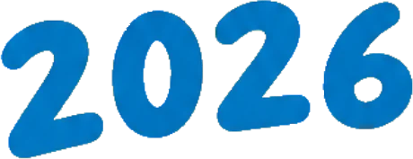
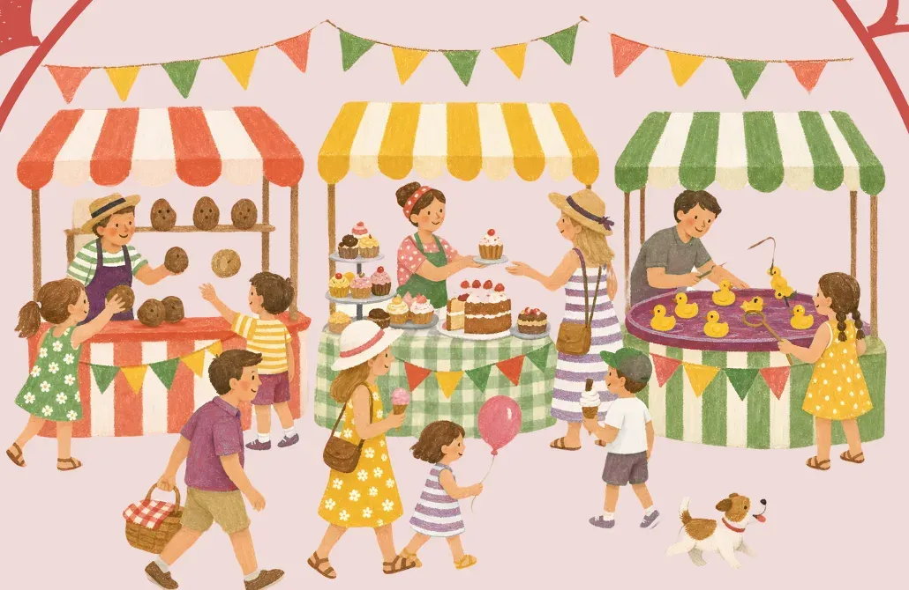
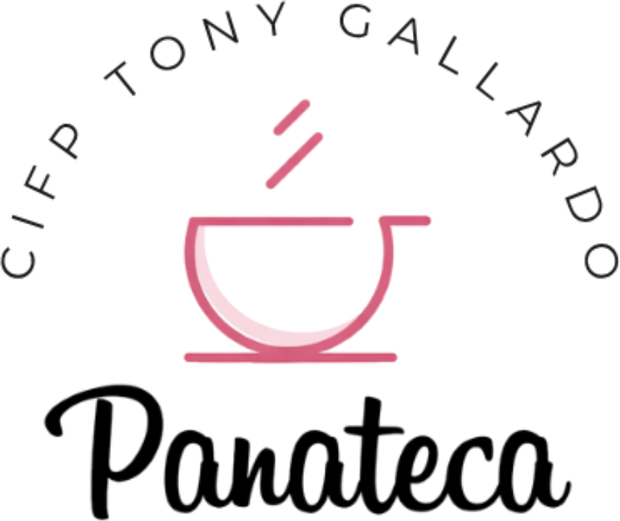

Durante una mañana, el CIFP Tony Gallardo se convierte en un mercado navideño: el alumnado diseña, elabora, vende, cuida y celebra. Tú solo tienes que venir.
Faltan
··
días
para el 11 de diciembre
Coja su número
Su número
00
Vie 11·12 · 09:00 h
CIFP Tony Gallardo
Le esperamos
El gran mercadillo navideño del CIFP Tony Gallardo, hecho por su alumnado.
MercaBásica es un proyecto educativo, inclusivo y abierto a la comunidad. Nació del cambio metodológico de los ciclos de Grado Básico y hoy convierte todo el centro en un auténtico mercado de Navidad.
Aquí el alumnado no solo aprende a fabricar un producto. Aprende a ponerle precio, a presentarlo, a venderlo, a atender a quien se acerca y a resolver lo que surja. Situaciones que ningún aula puede reproducir igual.
Carpintería, adornos, repostería, talleres, música, cuidados: cada familia profesional pone lo que sabe hacer al servicio de una mañana compartida con familias, profesorado, visitantes y otros centros.
La Formación Profesional también se construye haciendo, colaborando y conectándose con la sociedad.
Lista de la compra
- Diseñar el producto
- Hacerlo con las manos
- Ponerle precio
- Montar el puesto y el escaparate
- Atender al público
- Hacer el tique
- Trabajar en equipo
- Celebrarlo juntos

Tres ediciones, un mismo mostrador
-
Su turno2024
01
Primera edición. Nace en los ciclos de Grado Básico, con el aprendizaje basado en proyectos como motor.
-
Su turno2025
02
Segunda edición. Se suman otras familias profesionales, otros niveles y otros centros educativos.
-
Su turno2026
03
Tercera edición. Llega Panateca, el centro entero se enciende… y ahora te toca a ti.
El tique del día
Horario orientativo
CIFP TONY GALLARDO
LAS PALMAS DE GRAN CANARIA
VIE 11/12/2026EDICIÓN 03
HORACONCEPTO
- Apertura de puertas
- Comienza el actoCon la música de la TonyBand
- Bienvenida institucionalDirección del centro y autoridades
- ¿Qué es MercaBásica?Sabina Santana, coordinadora
- Presentación oficial de Panateca
- Reconocimiento especialVanesa Cabezas y Laura Puerto · WorldSkills Shanghái 2026
- Presentación del recorrido
- Antesala del Proyecto Identidad
- ENCENDIDO NAVIDEÑO ★Cuenta atrás de 10 a 1
- Recorrido por las casas
- ClausuraRegreso al espacio central
- Actuaciones y despedidaBaile de Navidad y Educación Infantil
ARTÍCULOS12
ENTRADAABIERTA A LA COMUNIDAD
ILUSIÓNINCLUIDA
TOTALUNA MAÑANA
¡Gracias por su visita!
Vuelva pronto
MB26 · 1112 · 0930
Un recorrido por lo que somos.
MercaBásica no se entiende desde un único lugar: hay que recorrerla. Cinco casitas en El Gran Mercado, siete talleres en La Plaza y muchas sorpresas por el camino.
Pulsa Empezar o cualquier parada del mapa, camina de una a otra y sella tu pasaporte.
-
Hall del Centro
Aquí empieza todo. A un lado, El Gran Mercado con sus casitas; al otro, La Plaza con sus talleres. Coge aire, que nos vamos de paseo.
-
La casita del herrero
El oficio del metal. Piezas trabajadas a mano en los talleres del centro, con paciencia y mucho pulso.
-
La casita del horno
Huele a Navidad. Dulces y masas hechos por el alumnado, de la receta al mostrador.
-
Taller de los superpoderes
Aquí todo el mundo tiene un superpoder. Un espacio accesible para jugar, crear y descubrir de lo que es capaz cada persona.
-
Taller de los recuerdos
Para llevarte la mañana puesta: un rincón donde crear tu recuerdo de MercaBásica y guardarlo.
-
La casita de los mil detalles
Pequeñas cosas hechas con mucho mimo por el alumnado de IFC+21: detalles únicos para poner bajo el árbol.
-
Panateca
Pan de verdad, hecho por personas que aprenden un oficio. Formación, inclusión y empleo con apoyo en la misma masa.
Conoce Panateca -
La casita del carpintero
Madera con olor a taller: árboles de Navidad, adornos y piezas salidas de las manos del alumnado.
-
Taller de las sonrisas
La misión es sencilla: que nadie salga de aquí sin una sonrisa.
-
Taller de la aventura y la diversión
En el porche, entre ventorrillos: retos y juegos para quien venga con ganas de moverse.
-
Taller de la alegría y el juego
Juegos para todas las edades. Aquí se viene a jugar, sin más.
-
Taller imaginación
Ideas que vuelan: un espacio para inventar, dibujar y crear historias.
-
Taller creativo
Manos a la obra: manualidades navideñas para hacer allí mismo y llevártelas.
-
La plaza · Escenario
El corazón de la mañana. Aquí arranca el acto a las 09:30 y aquí cerramos, a las 13:00, con las actuaciones de clausura. Fin del recorrido: ¡a celebrarlo!
Cambio de dinero
Hay tres puntos de cambio repartidos por los patios. Búscalos en el mapa antes de ir de compras.
Ventorrillos
Tres ventorrillos en el porche para reponer fuerzas entre parada y parada.
Radio Atlante
La radio del CIFP Tony Gallardo pone voz y banda sonora a la mañana.
La TonyBand
La banda del centro, la que llena el edificio de música.
Y juntas, todas las paradas nos recuerdan algo fundamental:
la Formación Profesional se construye cuando las personas, los conocimientos y las profesiones se encuentran.

Donde cada persona descubre que tiene un lugar.
Panateca no es solo un espacio donde se aprende una profesión. Es un proyecto que une formación, autonomía y empleabilidad, y que se presenta oficialmente en esta edición.
Receta n.º 1Para todas las personas
Ingredientes
- Alumnado del IFC+21manos a la obra
- Alumnado de Integración Socialacompañando
- Aprendizaje-Serviciola base
- Empleo con apoyoel horizonte
- Colaboración entre centrosen abundancia
- Empresascon la puerta abierta
- Autonomíaa fuego lento
Elaboración. Mezclar la formación con la vida real. Dejar reposar lo necesario para que cada persona encuentre su sitio, una responsabilidad y algo valioso que aportar.
Cuando la educación se conecta con la vida, el aprendizaje deja de ser una preparación para el futuro. Se convierte en una oportunidad para transformar el presente.
El mercado, en imágenes.
Los carteles de esta edición y las fotos y vídeos de las anteriores: así ha ido creciendo MercaBásica.
Edición 2026 · los carteles
Edición 2025 · todo el centro en marcha
Edición 2024 · donde empezó todo
Imagen de ediciones anteriores
Ven.
- Cuándo
- Viernes, 11 de diciembre de 2026
- Horario
- Desde las 09:00 hActo de apertura 09:30 h · Encendido 11:05 h · Recorrido por las casas 11:10–12:50 h · Clausura 12:50 h
- Dónde
- CIFP Tony GallardoCtra. de las Coloradas, 35009 Las Palmas de Gran Canaria
- Para quién
- Para todo el mundoFamilias, alumnado, profesorado, centros educativos, entidades, empresas… y cualquiera con ganas de mirar.
¿Vienes de fuera del centro? Inscríbete aquí: nos ayuda a controlar el aforo.
Detrás de cada producto, de cada taller, de cada actividad, de cada espacio y de cada proyecto…
hay personas.
- Personas que aprenden.
- Personas que enseñan.
- Personas que acompañan.
- Personas que creen.
Y personas que cada día descubren que son capaces de mucho más de lo que imaginaban.
Gracias por venir · Gracias por mirar · Gracias por participar